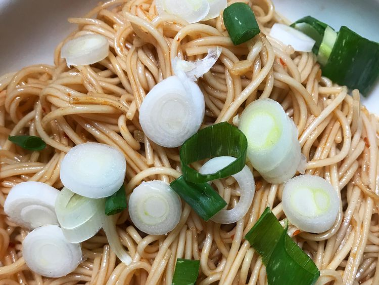

Chinese Style Vermicelli

Description
These Chinese-style rice vermicelli noodles make a quick and delicious meal. Drool worthy recipe made in just few mintues.
Ingredients
- 1 (8 ounce) package dried rice noodles
- 2 tablespoons vegetable oil
- 1 clove garlic, minced
- 1 tablespoon soy sauce
- ½ tablespoon chili sauce
- salt and pepper to taste
- 1 green onion, chopped
Steps
- Fill a large pot with water and bring to a rolling boil; stir in rice noodles and return to a boil. Cook until al dente, 2 to 3 minutes; try not to overcook as they will become mushy. Drain.
- Heat oil in a large skillet over medium heat. Add garlic and sauté until tender. Stir in noodles; season with soy sauce, chili sauce, salt, and pepper. Sprinkle with chopped green onion.